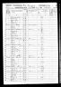
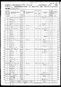

Tharp, John
| Birth Name | Tharp, John |
| Gender | male |
Events
| Event | Date | Place | Description | Sources |
|---|---|---|---|---|
| Occupation | 1850 | Pike, Jay, Indiana, USA | Farmer | 1a |
|
|
||||
| Census | 1850 | Pike, Jay, Indiana, USA | 1a | |
|
|
||||
| Census | 1860 | Pike, Jay, Indiana, USA | 1b | |
|
|
||||
| Birth | about 1820 | Ohio, Pennsylvania or Indiana - Conflicting records | 2a 1a 1b | |
|
|
||||
Families
Family of Tharp, John and Tharp, Mary |
||||||||
| Unknown | Partner | Tharp, Mary ( * about 1826 + ... ) | ||||||
| Children | ||||||||
| Name | Birth Date | Death Date |
|---|---|---|
| Tharp, Hiram | 11/10/1845 | 4/1/1923 |
Media


Pedigree
-
- Tharp, John
Source References
-
Indiana Census
-
- Date: 1850
- Page: Pike Township
-
Citation:
Source Citation
The National Archives in Washington, DC; Record Group: Records of the Bureau of the Census; Record Group Number: 29; Series Number: M432; Residence Date: 1850; Home in 1850: Pike, Jay, Indiana; Roll: 153; Page: 291bDescription
Township: PikeSource Information
Ancestry.com. 1850 United States Federal Census [database on-line]. Lehi, UT, USA: Ancestry.com Operations, Inc., 2009. Images reproduced by FamilySearch.
Original data:Seventh Census of the United States, 1850; (National Archives Microfilm Publication M432, 1009 rolls); Records of the Bureau of the Census, Record Group 29; National Archives, Washington, D.C.
-
- Date: 1860
- Page: Pike Township
-
Citation:
Source Citation
The National Archives in Washington D.C.; Record Group: Records of the Bureau of the Census; Record Group Number: 29; Series Number: M653; Residence Date: 1860; Home in 1860: Pike, Jay, Indiana; Roll: M653_269; Page: 32; Family History Library Film: 803269Source Information
Ancestry.com. 1860 United States Federal Census [database on-line]. Lehi, UT, USA: Ancestry.com Operations, Inc., 2009. Images reproduced by FamilySearch.Original data: 1860 U.S. census, population schedule. NARA microfilm publication M653, 1,438 rolls. Washington, D.C.: National Archives and Records Administration, n.d.
-
-
Iowa Death Records
-
- Page: Iowa, U.S., Death Records, 1880-1968; 1921-1929 (Ringgold County)
-
Citation:
Source Citation
State Historical Society of Iowa; Des Moines, IA, USA; Iowa Death Records, 1921-1940Description
Year: 1921-1929 (Ringgold County)Source Information
Ancestry.com. Iowa, U.S., Death Records, 1880-1968 [database on-line]. Lehi, UT, USA: Ancestry.com Operations, Inc., 2017.
Original data:Iowa Deaths, 1880-1904. State Historical Society of Iowa, State Archives, Des Moines, Iowa.; Iowa, Deaths, 1920-1951. State Historical Society of Iowa, State Archives, Des Moines, Iowa.
-